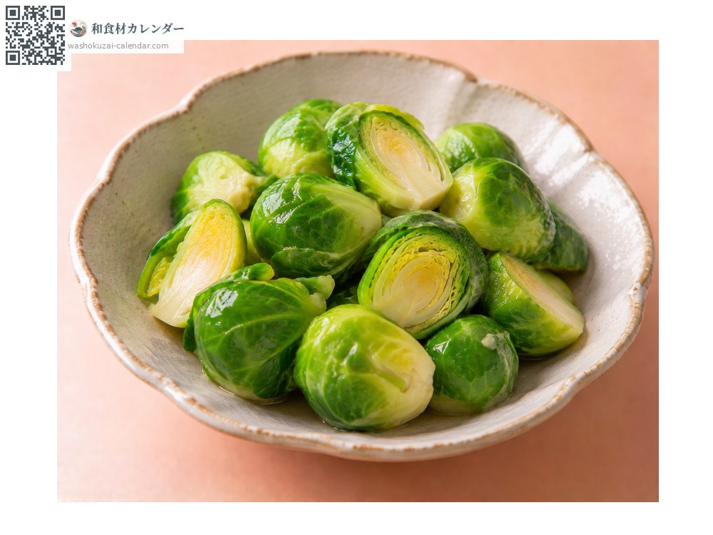
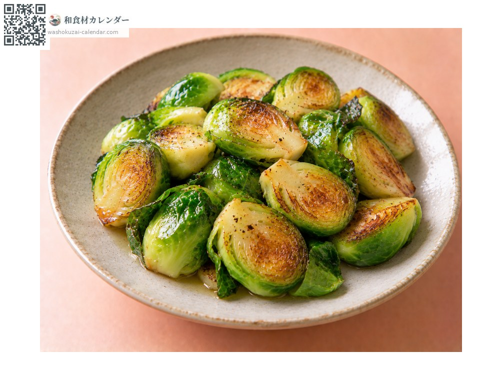
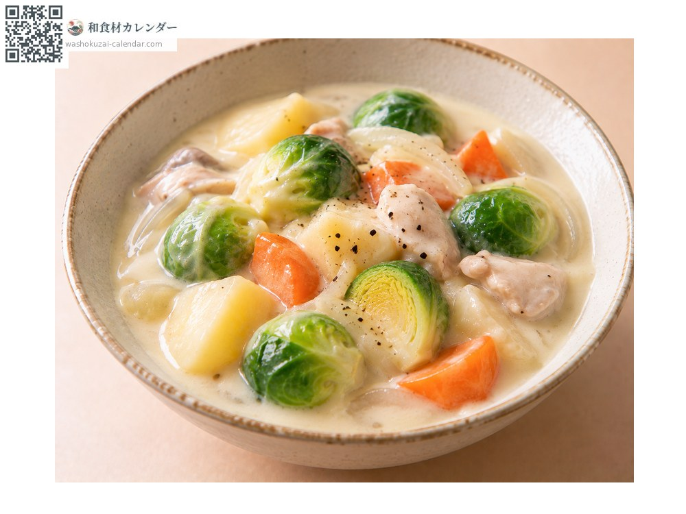
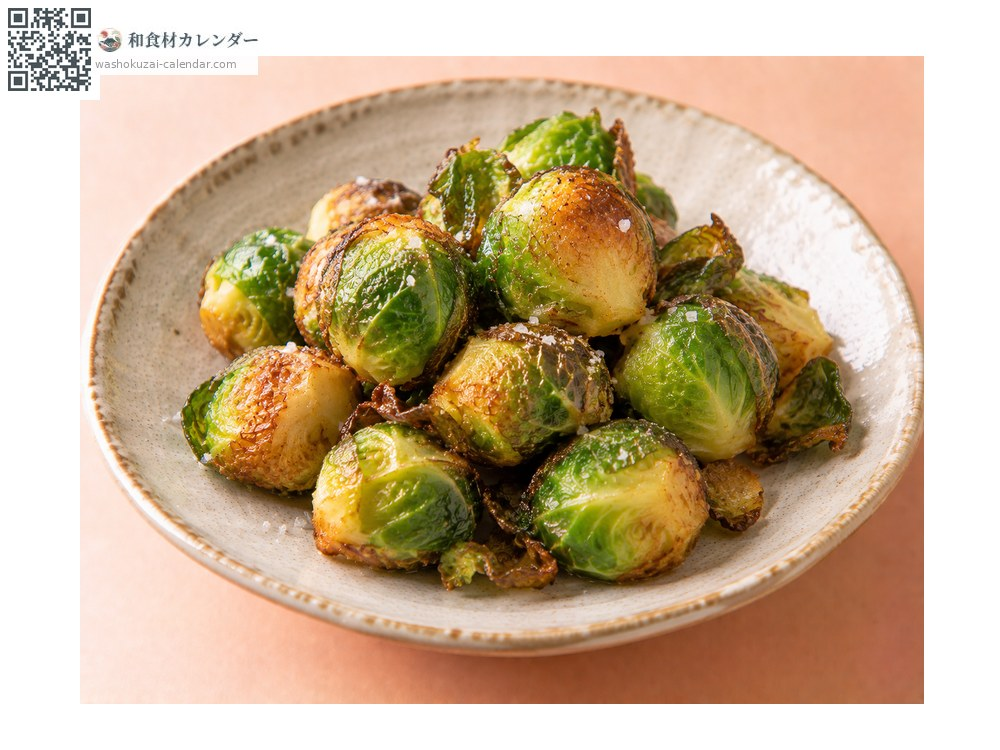

ผัก
กะหล่ำดาว
芽キャベツ めきゃべつ mekyabetsu
ชื่ออื่นmekyabetsu
อร่อยที่สุดในเดือน ม.ค., ก.พ., พ.ย., ธ.ค.

ช่วงที่อร่อยที่สุด
ม.ค.
ก.พ.
มี.ค.
เม.ย.
พ.ค.
มิ.ย.
ก.ค.
ส.ค.
ก.ย.
ต.ค.
พ.ย.
ธ.ค.
ช่วงอร่อยที่สุดมีจำหน่าย
วิธีปรุง

ลวกน้ำเกลือ
กรีดกากบาทที่โคนแล้วลวก จะสุกทั่วถึง

ผัดเนย
ผ่าครึ่งแล้วผัดเนย กลิ่นจะหอม

สตูว์
ใส่ในอาหารตุ๋น ไม่เละง่าย

ทอดไม่ชุบแป้ง
ทอดทั้งลูก ข้างนอกหอม ข้างในหวาน
วิธีเลือก
ห่อแน่น สีเขียวเข้มไม่ช้ำ ขนาดสม่ำเสมอ
วิธีเก็บรักษา
ใส่ถุงแช่เย็น ลวกแล้วแช่แข็งก็ได้
แหล่งผลิตหลัก
เกร็ดน่ารู้
เป็นพันธุ์แปรของกะหล่ำปลี ออกหัวเล็ก ๆ ราวห้าสิบหัวเรียงรายตามลำต้นที่หนา พัฒนาขึ้นใกล้กรุงบรัสเซลส์ จึงเป็นที่มาของชื่อภาษาอังกฤษ น้ำค้างแข็งทำให้หวานขึ้น ช่วงอากาศหนาวจึงอร่อยที่สุด